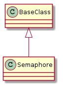

A module to wrap the python semaphores.

| Semaphore([size]) | Implements a Semaphore using Alan Downey’s notation. | ||
| Semaphore.wait() | Decrements the semaphore if > 0, waits if it is 0 | ||
| Semaphore.signal([value]) | Increments the Semaphore | ||
| Semaphore.increment_size() |
|